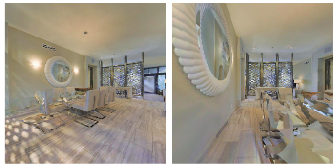
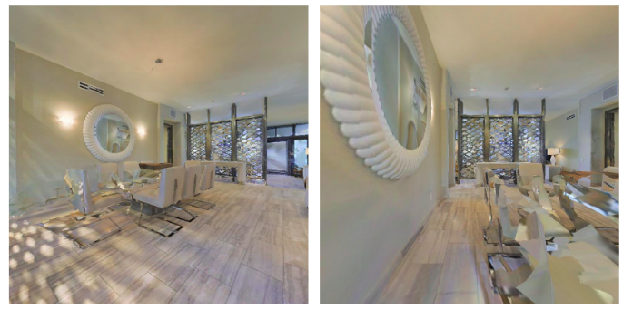

Default RTABMAP Loop Pairs
The loop pair candidates RTABMAP gives. It picks candidates with only a slight viewpoint change.
In this paper we present a novel framework for unsupervised topological clustering resulting in improved loop detection and closure for SLAM. A navigating mobile robot clusters its traversal into visually similar topologies where each cluster (topology) contains a set of similar looking images typically observed from spatially adjacent locations. Each such set of spatially adjacent and visually similar grouping of images constitutes a topology obtained without any supervision. We formulate a hierarchical loop discovery strategy that first detects loops at the level of topologies and subsequently at the level of images between the looped topologies. We show over a number of traversals across different Habitat environments that such a hierarchical pipeline significantly improves SOTA image based loop detection and closure methods. Further, as a consequence of improved loop detection, we enhance the loop closure and backend SLAM performance. Such a rendering of a traversal into topological segments is beneficial for downstream tasks such as navigation that can now build a topological graph where spatially adjacent topological clusters are connected by an edge and navigate over such topological graphs.
Topology Formation Pipeline: Feature extraction, clustering then sequential descriptor extraction followed by pairing sequential descriptor based on their similarity score to output the topology formed(visualised as sequence graph). The sequences Sis will be having variable length i.e. number of frame will be different in different frames. The edges between two nodes in sequence graph, says that both node (sequences) belong to same topology. Here, N and dg denote total number of pose/frames and global descriptor dimension respectively. And, P , V and ds denote total number of sequences, sequence descriptor and its dimension respectively.
Pose-graph optimisation results using G2O. We obtained the noisy trajectory by adding Gaussian noise to the ground truth odometry information. External noise has been added to account for drift accumulated in the real world dataset. The subfigures (a) and (b) compare optimiza- tion of noisy trajectories based on augmented loop pairs, (c) and (d) show optimization of noisy trajectories based on RTABMAP;s native loop pairs only. (e) and (f) show optimisation based on DBoW2's loop pairs. RTABMAP + Our augmented loop pairs enhance the optimization as compared to RTABMAP's native or DBoW2's loop pairs. This observation is consistent across numerous possible noise having different mean and variance.
Ground truth rotational difference between candi- dates of a loop pair in degrees for different loop detection pipeline. Detection of obtuse and opposite view loop pairs is significantly improved due to our formulation as com- pared to RTABMAP's and DBoW2's loop detection. This compensates any reduction observed in the proposed system while dealing with the loop pairs that have very close or similar viewing angle.
The loop pair candidates RTABMAP gives. It picks candidates with only a slight viewpoint change.
As a byproduct of our method, our method can also pick up loop pair candidates with a large viewpoint change.
The loop pair candidates RTABMAP gives, visualised in a trajectory. A connection between poses indicates they are a loop pair match candidate. Images with only similar viewpoint are connected.
Candidates with a large viewpoint change are also picked up by our method, thus improving the Backend Optimisation and loop closure
@misc{sharma2023hierarchical,
title ={Hierarchical Unsupervised Topological SLAM},
author={Ayush Sharma and Yash Mehan and Pradyumna Dasu and Sourav Garg and Madhava Krishna},
year ={2023},
journal={ITSC},
}
The authors thank MathWorks for their generous financial support.